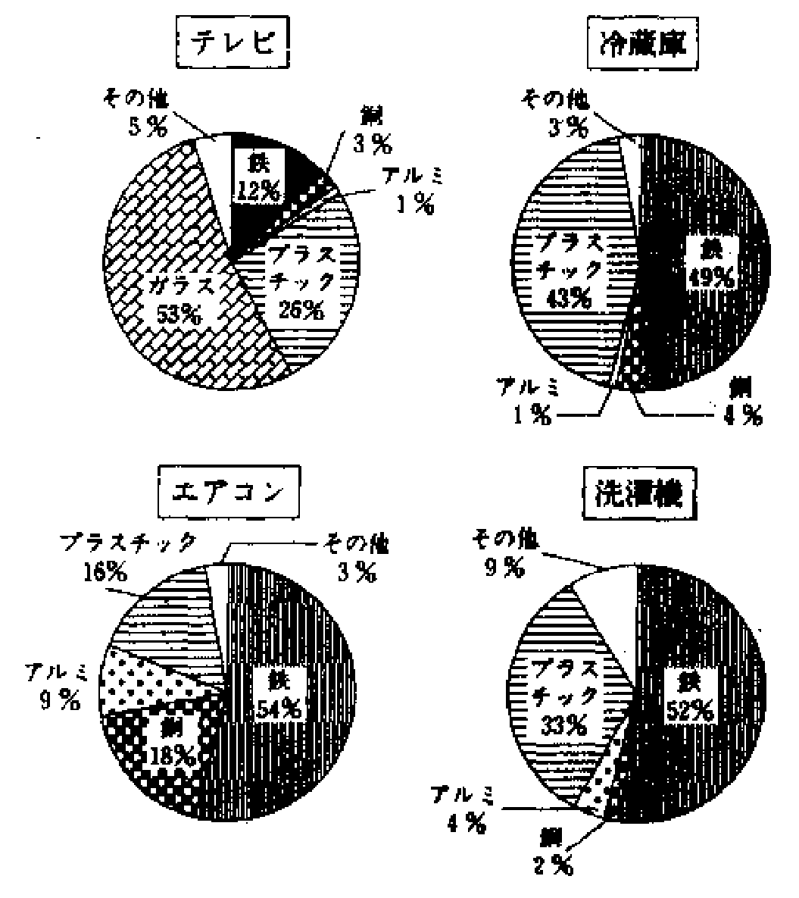

（1）
恋愛
問1 恋愛結婚に賛成かどうか順番に意見を求められた。
問2 若いとき夢中で星座の名前を覚えた。
問3 警察は封筒の筆跡から犯人を数名に限定した。
問4 東の空に美しい光がさして静かに太陽が昇ってきた。
問5 むかしより、掃除や洗濯などの家事労働の時間がへった。
問1 しんりんがきえて地球のおんだんかがすすんでいる。
問2 私には、かみのようなぜったいてきなそんざいがあるとそうぞうするのはむずかしい。
問3 このくすりはようじのひふアレルギーにこうかがある。
問4 友だちとゆうびんきょくの前で朝早く会うやくそくをしたけれど、ちこくしないかしんぱいだ。
問5 あつかったのでまどを開けたら、すずしい風がふいてきた。
トーキング・タイプライターとは、簡単にいえば、電動式タイプライターとテレビとが組み合わさったような機械である。この特徴の一つは、子どもの反応（注1）に対していちいちうけこたえしてくれることだ。
トーキング・タイプライターは小さな部屋におかれている。ここに子どもは30分以下なら何分間いてもよい。すぐに出ていってもかまわない。まったく自由なのだ。しかし、この小部屋のなかでは、「何々をせよ」「（ ① ）」といった指示や禁止は一切（注2）与えられない。好きなことをなんでもしてよい。これは徹底している。
子どもが部屋に入ってくる。（ ② ）、たいていは部屋の真中にあるこの奇妙なタイプライターに興味を持って、それをいじりはじめる（注3）。なかにはなかなかさわろうとしない子どももいるが、それは例外的である。タイプライターのキーをいろいろたたいてみる。（ ② ）、タイプされた文字が出、同時に、その都度（注4）その文字の発音が聞こえてくる。たとえばaという文字をたたくとタイプはすぐに「エイ」と答えてくれるのだ。
これはおもしろい経験だ。ある三歳児は、機械が自分ののぞみ通りに何回も反応してくれることがうれしくて、75回も同じキーをたたきつづけたという。
組織的に一列の文字を一つ一つ順にためす子どももいれば、数字のところをいじって遊んでいる者もいる。また、デタラメにそこらじゅうのキーをたたいてみる子どももいる。しかし、みな、このタイプライターのキーの自由な探索（注5）を楽しむのである。
そうしているうち、この機械の構造がわかってくる。こうなると子どもは飽きてくる。この部屋のなかにとどまる時間が短くなったり、タイプをたたく回数が落ちてきたら、そのしるしがあらわれた、と思えばよい。こうなったとき、ただちに次の学習段階に入る。放っておくと、二度とここにきてくれなくなってしまうからだ。
この第二段階では、前ぶれもなく（注6）突然、テレビの画面の部分に文字が出、つづいてその発音が聞こえる。同時にこの画面に出た文字を除いてすべてのキーが動かなくなる。子どもは「アレ！」と思うだろう。そこで押すと動くキーをみつけようと、一生懸命になる。子どもが対応する（注7）キーをみつけ出して打つと、その文字がタイプされる。そして再びその文字の発音が聞こえる。少しのまをおいたのち、別の文字が画面にあらわれる……。
（中略）
こうして子どもは、おもしろがって画面に出た文字と対応するキーをみつけようと夢中になって反応しているうちに、アルファベットの各文字や句読点などを知らず知らずのうちに学習していくのである。
（波多野誼余夫・稲垣佳世子『知的好奇心』による）
（注1）反応：外からの刺激に対して起こる動き
（注2）一切：全然、まったく
（注3）いじる：用事もないのに、さわったり、なでたりすること
（注4）その都度：そのたび（度）に
（注5）探索：いろいろなことをして、もののある場所などを探すこと
（注6）前ぶれもなく：次に起こることを知らせずに
（注7）対応する：合う
私は運転免許を持っていない。ほとんどの人は学生時代に取ってしまうのだろうが、当時は車が必要だと思っていなかった。もともと車が好きではないので、免許を取るなどという考えは全くなかったのであった。
ところが最近、免許はあったほうがいいかなと考えている。これから年をとっていくにつれ、もしかしたら必需品になるのではとすら思う（注1）ようになったからだ。
たとえば出先で買い物をすると、荷物が多くなるときがある。私の場合はほとんどが本なのだが、そんなときに、
「ああ、車があったらなあ」
とため息をつく。もちろんタクシーは走ってはいるが、うまくつかまらずに町なかをタクシーを求めてさまよい歩くこともある。重い荷物を持ち運ぶとなると、欲しい本も、次の機会にとあきらめざるをえない。こんなとき、自分の車があったらどれだけ楽かわからない。
知り合いには五十歳を過ぎて免許を取った男性たちがいる。彼らに免許の話を聞こうとすると、話が途切れることはない。苦労して取ったので、その喜びはたとえようもないらしく、目が輝いている。
「運転はいいですよ。ぜひ取りなさい。私なんか週末、必ずドライブに行ってます」
と勧められた。
「家には居場所がありませんからね。でも車の中は僕だけの個室だから」
そういう考え方もあったのかと私はうなずいた。
もう一人は、無事に免許を取っても、最初は右折（注2）をするのがとても怖かったという。駐車をするにも、スペース（注3）があるときは問題ないのだが、二台の車の間に駐車するとなると、舞い上がって（注4）しまうといっていた。
免許を取った直後、彼は近所のスーパーマーケットに行こうと試みた。彼がまずやったのは、徒歩で（注5）その店まで行き、駐車場が空いているかを確認することだった。そして右折は怖いので、左折ばかりを繰り返し、ものすごく大回りをして店まで行ったというのである。
この話は笑い話として伝えられているのだが、もしも免許を取ったら、私もそういうことをやりかねない。最近は年配の人（注6）も車を運転しているし、それを見ると自分もしてみたくなる。しかし適性や事故を起こしたらなどと考えはじめると、便利だからという気持ちは、しゅーっとしぼんでいってしまい、いまひとつ（注7）教習所（注8）の門を叩くまでには至っていないのである。
（群ようこ「四十の遠吠え」1998年2月20日付日本経済新聞による）
（注1）～とすら思う：～とまで思う、～とさえ思う
（注2）右折：道を右に曲がること。車が左側を通行する日本では、交差点で右折するときには前から来る車に十分注意する必要がある。
（注3）スペース：空いている場所
（注4）舞い上がる：どきどきした気持ちになる
（注5）徒歩で：歩いて
（注6）年配の人：中年以上の年の人
（注7）いまひとつ：あと少しのところで
（注8）教習所：車の運転技術を教える学校
（1）小さな子供たちは見るもの、さわるもの、なんでも不思議がります。
「あれなあに？」「なぜ？」「どうして？」の連発で（注1）大人たちをこまらせます。いざ（注2）説明してやろうと思って、どうしてもうまく説明できず、自分ではわかっていると思っていたことが、じつはさっぱりわかっていなかった、と発見させられることがあります。
（大野栄一『数学なんてこわくない』による）
（注1）～の連発で：～と続けて聞いて
（注2）いざ：さあ、それでは
（2）先日は、旅行の直前に風邪をひいてしまい、大変失礼しました。みなさまからいただいた絵はがきに旅行の楽しいようすが書いてあり、あらためて、参加できなかったことを残念に思いました。
先月、「旅行に一緒に行きませんか」とさそってくださったとき、とてもうれしくて、いろいろ準備をしていたのですが、旅行の前日からせきがとまらなくなってしまいました。頭が痛いわけでも、熱があるわけでもなかったのですが、みなさまにご迷惑をおかけしてはいけないと思い、ご一緒するのを遠慮させていただきました。急なことで、本当に申し訳ございませんでした。今度はぜひ行きたいと思っておりますので、またおさそいくださいませ。どうぞよろしくお願いします。
（3）次の文章は、ある電力会社の広告の一部である。
将来を見すえた（注1）電力の確保（注2）とともに、
電力ピーク（注3）の伸びを抑えることに努めています。
みなさまのご協力をお願いします。
電気は貯めることができないため、1年のうちで電気が最も使われる真夏のピークにあわせて設備をつくらなければなりません。しかし、発電所の建設には10年から20年という長い期間が必要です。つまり、いまみなさまにお使いいただいている電気は10年～20年前に建設を始めた設備が作り出している電気なのです。
（1997年3月25日掲載の東京電力広告による）
（注1）将来を見すえる：将来のことを考える
（注2）電力の確保：必要な電力を十分に作ること
（注3）ピーク：最も多いとき。ここでは「最大使用量」という意味
（4）時間に対比（注1）されるのは空間（注2）である。時間がたつというのは、いまが過ぎてゆくことだともいえる。いまがもとのいまでなく、別のいまになってゆくことである。いまは何もしないでじっとしていても移ってゆくようにみえる。しかしいまに対比されるここ、われわれの現にいる場所、にはこのようなことはない。いまわたしは机に向かって坐っているが、動こうとしなければいつまでも坐ったままでいられる。空間がわたしの手を引っぱって、わたしを違う場所に移すわけではない。しかしわたしはじっとしているのに、時間の方はどんどんたってゆく。これは実に不思議なことである。
（中村秀吉『時間のパラドックス』による）
（注1）対比する：二つを比較する
（注2）空間：場所
（5）官能（注1）検査で「いい」、「悪い」を判断してもらうためには、一対（注2）比較法というのを用います。見かけはまったく同じで、実際には味の違うものを食べてもらうとか、同じようなケースに入れた香水の香りをかいでもらうとかです。この場合、二つの方法があります。
まず、第一の方法ではAとBを比較して、Bがよいといい、BとCを比較してCがよいといったとします。そこで（ ① ）を比較したとき、（ ② ）が（ ③ ）よりよければ問題がないのですが、Aの方がよいといったとすれば、判断の誤りがあるということになります。
（矢野宏『誤差を科学する』による）
（注1）官能：音、色、味、温度などを感じる働き
（注2）一対：二つで一組になっているもの
（6）だいたいことばには、「わかる」ということで考えてみると、二種類あるものです。
一つは、自分は使わないが、意味は知っているというもので、これは少々むずかしく言うと「理解語彙」という中にはいります。
一方、人が使うのを見聞きして、わかるだけでなく、自分も使う、というのは「使用語彙」にぞくする、というようにいいます。
「語彙」ということばは、ことばの集まりという意味です。ですから、「理解語彙」にぞくすることばの数は「使用語彙」にぞくすることばより、ずっと多くなります。
たとえば、古い日本の歌を集めた万葉集（注1）の中のことばには、いまも使われているのと、その頃だけ（あるいはもう少し後までも使われていたけれども、いまはもう現代語の中にはいらない）のものとがあります。
その、いまは使わないことばにも、また二種類あって、前後の事情から（専門的には文脈で、あるいは場面で）意味がつかめるのと、なんのことやらまったくわからん（注2）というのとにわけられます。そのわかるほうのことばもまた、理解語彙のほうにはいります。
ですから、それぞれの人の理解語彙の量は、相当のふくらみがあることになります。
「お前」についていえば、理解語彙にぞくする人と、使用語彙にぞくする人と、二種類あるのではないでしょうか。
私はもちろん「お前」の意味はわかるのですが、自分自身では、まず使いません（注3）ので、（ ① ）といってもいいでしょう。
（寿岳章子『ことばづかいの昭和史』による）
（注1）古い日本の歌を集めた万葉集：8世紀ごろまでの歌を集めたもの
（注2）なんのことやらまったくわからん：何を意味しているのかまったくわからない
（注3）まず使いません：ほとんど使いません
（7）日本では、2001年4月から、「家電（注1）リサイクル（注2）法」という法律が実施される。これはゴミを減らすために、家庭で不要になった家電の処理方法について決めたものである。この法律では、メーカー（注3）は販売店などを通じて集められたテレビ、エアコン（注4）、冷蔵庫、洗濯機の4種類の家電から鉄、銅、アルミ（注5）、ガラスなどを回収し（注6）、再び原材料や部品として利用することが義務づけられている。同時に、それぞれの製品について重量の何%ぐらいを再利用しなければならないかというリサイクル率の目標も表のように決められている。
表からわかるように、リサイクル率の目標はあまり高くない。その原因は、家電製品に多く使われているプラスチックがリサイクル法の対象外になったためといわれている。
図のとおり、プラスチックが製品の重量のおよそ3分の1以上を占める（ A ）と（ B ）は、リサイクル率の目標が50%となっている。特に（ B ）は4種類の家電製品の中でプラスチックの使われている割合が最も高い。それに対して、再利用しやすいガラスが全重量の半分以上を占めている（ C ）は、上記の2種類に比べ、リサイクル率の目標が少し高くなっている。また、（ D ）の目標の数字が最も高くなっているのは、再利用の方法が決まっている金属類が多く使われているからである。
表 製品ごとのリサイクル率の目標
| 製品名 | リサイクル率 |
|---|---|
| エアコン | 60% |
| テレビ | 55% |
| 冷蔵庫 | 50% |
| 洗濯機 | 50% |
図 家電リサイクル法の対象4製品の原材料の割合

（図：1994年度NEDO調査による）
（注1）家電：家庭用電気製品
（注2）リサイクル：資源を再利用すること
（注3）メーカー：製造会社
（注4）エアコン：エア コンディショナー。室内の温度や湿度を調節する電気製品
（注5）アルミ：アルミニウム。化学記号はAl
（注6）回収する：元のところに集める